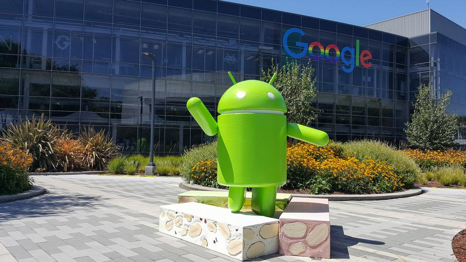

 Em 2005, o gigante de Mountain View que vinha comprando uma série de startups, comprou a empresa criadora do Android, uma empresa nascida em 2003, que inicialmente desenvolveu um sistema operacional inteligente para câmeras digitais, mas que logo enxergou um potencial maior no sistema, ampliando sua utilidade e características para que pudesse servir como sistema para celulares.
Ao abandonar a ideia original e focar em um sistema para smartphones, a proposta era ser apenas mais uma opção em um mercado que tinha até o momento como principais nomes, o Symbian (Nokia) e Windows Mobile (Microsoft).
A ideia original dos criadores era lançar um inovador sistema para câmeras digitais, porém, ao verem que o mercado não era tão amplo quanto gostariam, resolveram focar no mercado mobile. Na época, Rubin e sua equipe ofereceram um novo meio de sistema operacional móvel, ou seja, o Open Source, baseado no Kernel Linux. O sistema constava com uma interface simples, funcional e também integrada a vários instrumentos. A ideia era oferecer um sistema gratuito para todas as pessoas que quisessem ter acesso a ele e também ser simples aos desenvolvedores. Veja também os 5 melhores antivírus para Android. Em 2005 o Google adquiriu o Android Inc, e com isso nasceu a Google Mobile Division, divisão de pesquisa em tecnologia móvel da maior empresa do mundo de tecnologia. Apesar de ter causado desconfiança e dúvidas na época, já que muitos achavam difícil uma competição os Windows Mobile, da Microsoft, e o iOS, da Apple. Os primeiros contratos de parceria surgiram com fabricantes de hardware e software, os quais o Google prometeu um sistema flexível e atualizável.
| Autor | Turma | gmail |
|---|---|---|
| Lucas | Senac 2022.4 | lucassenac@gmail.com |